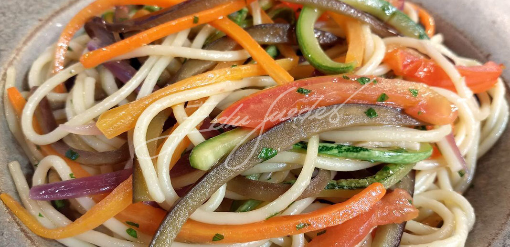

Pasta with vegetables

Back to the main page
Pasta is one of the most commonplace foods, and they're delicious and easy to cook with some fried vegetables!
Ingredients
- Broccoli
- Grated carrots
- Any pasta of your liking. We personally like fusilli with this recipe.
- Chopped onions
- Oregano
- Any extra vegetables that you would like
- Chopped garlic
Steps
-
Bring water to a boil. For every 100g of pasta, you should use one liter of water.
-
Use the instructions on the package as a guide of how much time the pasta should stay in the hot water
-
Drain the pasta
-
Heat olive oil in a stir-fry pan
-
Add garlic and onion to your pan
- Add broccoli and any other vegetables you choose.Add the ones you'd like to eat in a more raw fashion last
-
Add the grated carrots and the pasta, fry them for a bit until mixed
-
Enjoy!